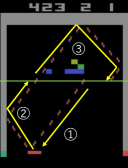

Search The Perfect Trajectories at Breakout
Shigeru Matsumurashigeru.matsumura at elliott-labo.com
Elliott Trade Laboratory Inc.
Ver 1.0: 21 Sep. 2018


Introduction
What is necessary to get the perfect trajectories (without losing one Live) at the Atari2600 games? It is impossible to get them with current Reinforcement Learning (RL) algorithms. Since the search techniques in classical RL have some problems, so we believe that it is necessary to consider new search techniques. First of all, we considered a technique to make it possible to get the perfect trajectories at Breakout.
Search techniques in classical Reinforcement Learning
In the classic RL techniques, there are roughly two search techniques: random search; $\varepsilon$-greedy.
Random search: as an advantage, generally, it selects an action at each state uniformly, it makes possible to search without any bias, but as a disadvantage, the probability to arrive at the final destination is decrease according to both the distance to the final destination (i.e., number of steps) and number of routes to the wrong destination are increased.
$\varepsilon$-greedy: $\varepsilon$-greedy or $\varepsilon$-soft are methods that using $\varepsilon$ that a probability of the random action selection, selects whether the random action selection or deterministically action selection with currently learned model. $\varepsilon$-greedy—recently popular method—increase the probability of deterministically action selection using $\epsilon$ with linearly decreasing from $1.0$. As an advantage, the agent can use learned model for action selection at the learned states, so deterministically action selection at the learned states is possible—that is, the agent not search for action at the learned states. However, as a disadvantage, the past experiences interfere with learning optimal action selection at the states which unlearned and the past experiences are not useful at all. That is, when $\varepsilon$ decreases sufficiently, there is a possibility that the agent can not be learned the optimal trajectories because the number of samples by the random search not affected by the past experience is small. Especially in the game environment, depending on the game, although the difficulty level of the initial stage is relatively low, it increases to a journey into a new stage, so the agent can not use past experience. So the agent may need to learn new stage from scratch. For example, at the initial stage of Breakout, the agent can return the ball whatever direction and make to break the bricks, but when the number of blocks is small, the agent needs to return aiming at the bricks, or even if the ball comes from the same direction, return it in a different direction—otherwise the ball may draw the same trajectory indefinitely. Under such environments, the search method using $\varepsilon$-greedy that linearly decrease the probability of the random action selection is not effective.
An another problem: Another important search method that can not be realized by both methods: if it turns out that it is impossible for the agent to reach its final destination even if the agent selects all possible action, the agent must return to the previous state and learn another trajectories—in other words, the agent must be able to throw away the incorrect experiences and learn the new experiences at any time.
The agent using classical RL techniques can increase the value of the trajectory leading to that trajectory by backup the trajectory's rewards that earn more rewards newly found. There is a probability that the optimal trajectories can not obtained due to the fact that the small rewards of the later stage can not overwrite the large reward earned at the first or mid stage. For example, at the mid stage of Breakout, the agent can earn the highest rewards by breaking many top-level bricks at once, so the value of the trajectory leading to it becomes very high. However, few bricks at the final stage so can earn only low reward—breaking only one brick at once, or at the next new initial stage, the smallest reward the agent can earn from the bottom-level bricks can not overwrite the high value of the mid stage—so, the agent always returns the ball in a direction that aims at the left or right walls without aiming at bricks. PRIORITIZED EXPERIENCE REPLAY (Schaul et al., 2016) seems to be able to solve this problem well—prioritize learning of sampled trajectories with learning deficiency. However, this technique enables effective sampling, but other methods are needed to increase sample variations.
Methods
As a result of considering the advantages and disadvantages of the two classical search methods and the problems that can not be realized by them, we can know what is necessary for an effective search method: (1) random search with no biases at unlearned state; (2) deterministic action selection at learned state; (3) to re-learn to new experiences with overwrite nonoptimal experiences at any time. In order to realize these, we devised the following method.
Episode separation
In order to realize these, we need to consider the situation where each is needed: (1) is a normly used method to search for a new trajectory; (2) is traveling on the trajectory that has been searched; (3) is a case where it is difficult to search for a new trajectory by (1). To identify these at Breakout: (1) if the agent can not return the ball, it is necessary to search for a trajectory that can return the ball; (2) if the agent returns the ball, its trajectory is OK; (3) the agent can not find a trajectory to return the ball for a long time—the agent needs to go back the previous situation and search for a new trajectory. So it is useful to divide the episode into smaller units.
As shown in Figure 1, we have defined the success episode (left) and the failure episode (right) and we also define that the phase in an episode (left). We grasp the location of the object by object detect using OpenCV from the frame of Breakout. We will judge the current phase according to the position of the ball.
|  | |
|
Figure 1: The success episode (left) and the failure episode (right).
①, ② and ③ are represented each phase. In addition, the phase zero is exist (but not drawn in left), it represented just after the start of the game so there is no ball.
the green line at center in left is represented border for separating phases. it is located under the bottom bricks.
|
|
Collect the successful episodes
Each episode will retry searching for action by random search until it succeeds (as (1)). The sequence that stacked successful episodes eventually break all the bricks leading to the highest score $864$ (as (2)). However, in the case of Breakout, depending on the position of the paddle and the trajectory of the ball, there are cases where the agent can not succeed even if all possible actions are selected. In the case of position of paddle is at the right wall (like to pierce the wall) and trajectory of the ball is the same as right in Figure 1, paddle does not reach the ball even if the agent takes actions that all left. In this case, the agent has to give up this episode and go back and re-try the previous episode to get a different ball trajectory (as (3)).
Specialization of the environment
The base specification of the environment class follows alewrap (Deepmind, 2014) used at DQN3.0 (Deepmind, 2017)
implemented Deep Q-network (Mnih et al., 2015)—maximize between two recent frames; frameskip.
The specification of mentioned above adds on that.
In order to realize that specification of mentioned above, it is necessary to restore the start state of the previous episode.
To restore the start state of the previous episode, it is necessary the methods of the environment class which can get the environment state and restores it.
The previous version of AtariEnv class of OpenAI Gym (Brockman et al., 2016) has cloneState() method (as get the current environment state) and
restoreState() method (as restore the environment state from the pre-cloned environment state)
but the latest version has not them.
However, ALEInterface class in atari_py (OpenAI, 2017)
(it provides the python interface of Arcade Learning Environment (M. G. Bellemare et al., 2013) and used at AtariEnv class) has them yet
so we use them directly got an ALEInterface instance from an AtariEnv instance.
This specification may call to mind that it seems so illegal but it is a very reasonable specification that short-cut previous states from an initial state,
because the time of journey of the game is becoming long according to how well the agent learned the game,
so re-try the game from an initial state may spend a very long time.
Experiments and results
See the jupyter notebook (breakout.ipynb)
in the repository.
Discussion
This time it was only Breakout experiment, but we think that it is possible to cope with other games
by changing BreakoutDecoder class, exit_check function and various arguments.
Although the game frame image is included in the sequence data for creating a movie, this can be omitted, and the memory usage can be reduced.
Although not implemented this time, we can assume that it is possible to search in parallel by multithreading.
However, the game structure of the racket game such as Breakout is relatively simple (the rule is simple, the number of objects is small),
it was easy to separate the episode, but the shooting games with many objects and the maze game with no clear rules enable interpreted by the program may be difficult.
References
- Schaul, T., Quan, J., Antonoglou, I., & Silver, D. (2016). Prioritized experience replay. arXiv preprint arXiv:1511.05952v4. URL https://arxiv.org/abs/1511.05952.
- Deepmind. (2014). A lua wrapper for the Arcade Learning Environment/xitari. URL https://github.com/deepmind/alewrap.
- Deepmind. (2017). Lua/Torch implementation of DQN (Nature, 2015). URL https://github.com/deepmind/dqn.
- Mnih, V., Kavukcuoglu, K., Silver, D., Rusu, A. A., Veness, J., Bellemare, M. G., ... & Petersen, S. (2015). Human-level control through deep reinforcement learning. Nature, 518(7540), 529. URL https://www.nature.com/articles/nature14236.
- Brockman, G., Cheung, V., Pettersson, L., Schneider, J., Schulman, J., Tang, J., Zaremba, W. (2016). OpenAI Gym. arXiv preprint arXiv:1606.01540. URL http://arxiv.org/abs/1606.01540.
- OpenAI. atari_py. (2017). URL https://github.com/openai/atari-py.
- M. G. Bellemare, Y. Naddaf, J. Veness and M. Bowling. (2013). The Arcade Learning Environment: An Evaluation Platform for General Agents, Volume 47, pages 253-279. Journal of Artificial Intelligence Research.